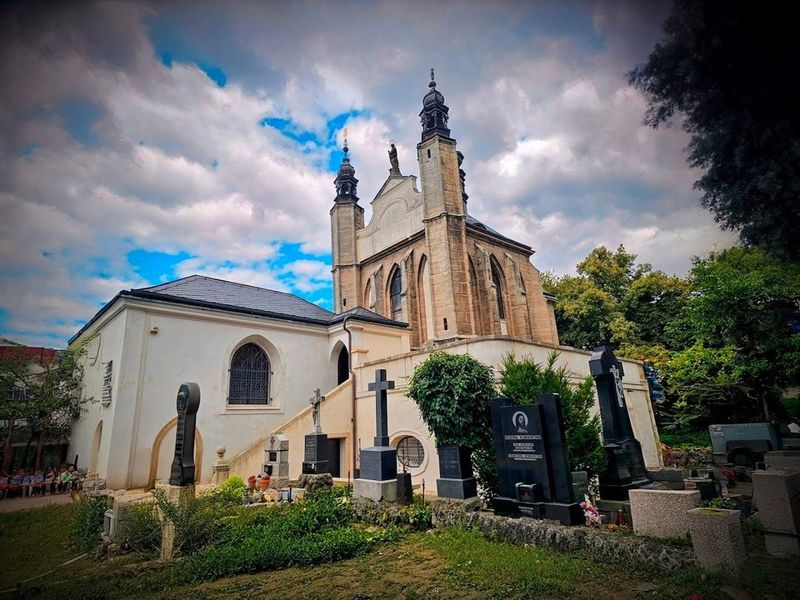
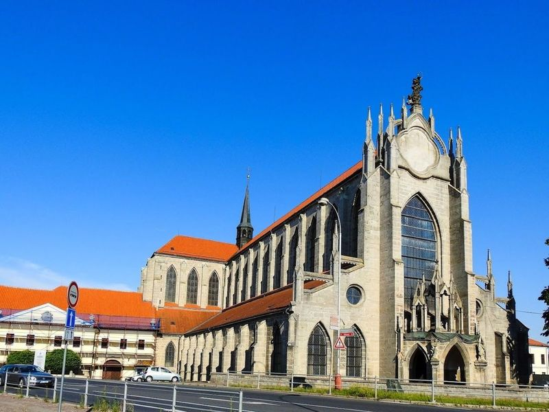
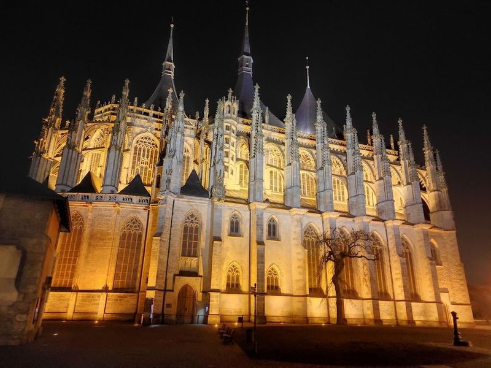
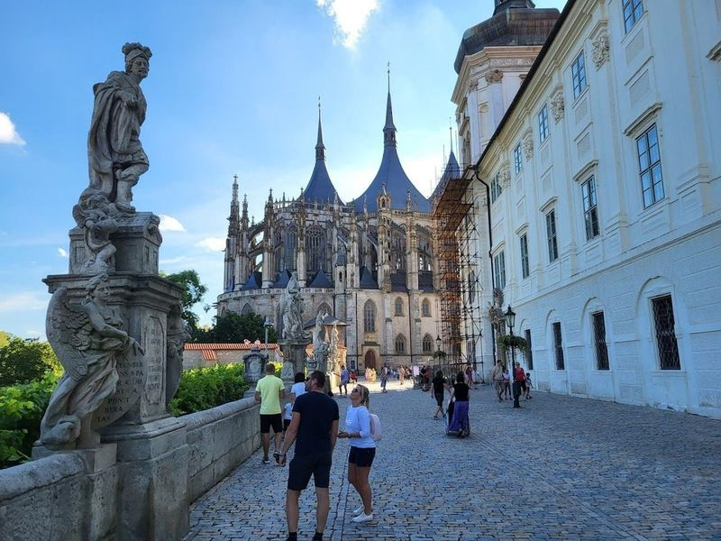
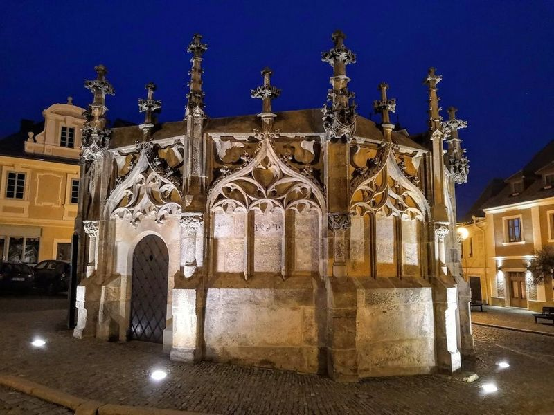
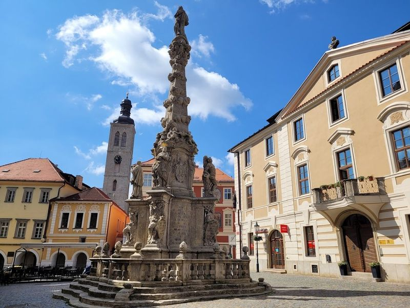
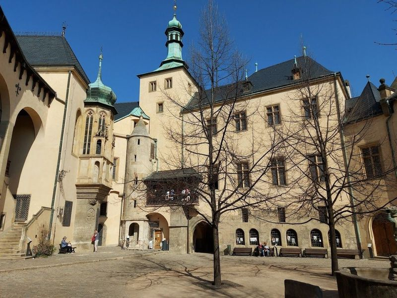
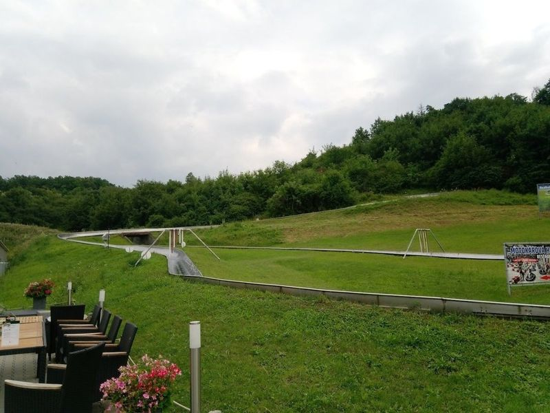
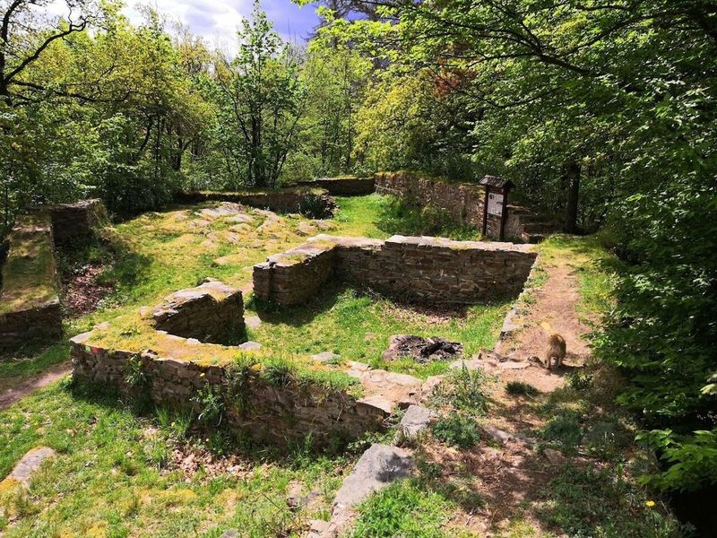
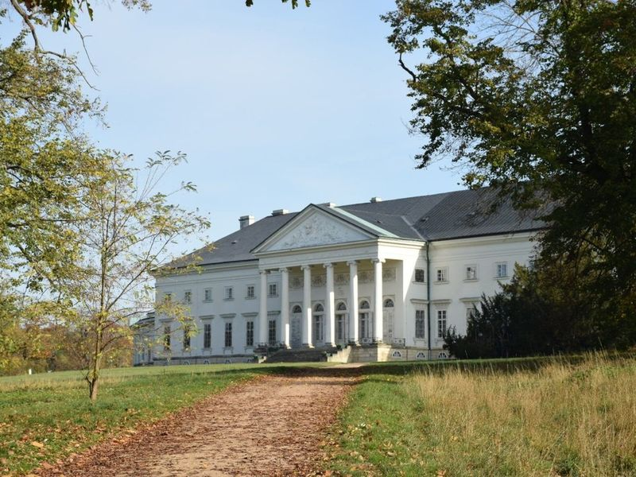

Explore Kutna Hora
A Brief History
Kutná Hora mined silver that financed Bohemian kings and minted Prague groschen from the thirteenth century. St. Barbara's Church, Italian Court, and Sedlec ossuary record Gothic patronage and medieval Central European mining wealth east of Prague. Silver-mine tours and ossuary chapels extend Gothic patronage through the Bohemian plateau east of Prague.
Attractions Map
Top Sights & Activities

Sedlec Ossuary
Sedlec Ossuary, also known as the 'Bone Church,' is a small Gothic chapel located beneath the Cemetery Church of All Saints in Kutna Hora, Czech Republic. It is adorned with garlands of human skulls, a bone chandelier, and chalices made from the bones of over 40,000 individuals. This macabre yet captivating site attracts visitors worldwide who are eager to witness its unique artistry and contemplate mortality.

Cathedral of Assumption of Our Lady and St. John the Baptist
The Cathedral of Assumption of Our Lady and St. John the Baptist is a UNESCO-listed Catholic church that showcases a blend of Baroque and Gothic styles. Originally built in the 14th century, it was the first French Gothic church in Czech lands and the largest religious building in Bohemia at that time. Despite being burned by Hussites in the 1400s, it was restored to its former glory with a Baroque influence in the early 18th century.

St Barbara's Church
St. Barbara's Cathedral is a example of Gothic architecture located in Kutna Hora, Czech Republic. The cathedral, with its sharp spines and flying buttresses, is a UNESCO World Heritage site and well-preserved churches in Central Europe. It was built between 1257 and 1281 and boasts five naves. The construction began in 1388 but wasn't completed until the early twentieth century. St.

Jesuit College
In Kutna Hora, visitors can explore the Gothic Cathedral of St. Barbara, the Baroque Jesuit College adorned with statues reminiscent of Prague's Charles Bridge, and the Silver Museum featuring a 280-meter mining tunnel. The area also includes historic sites like Vlassky dvur, Gothic churches, and Sedlec with its unique ossuary chapel decorated with 40,000 human remains.

Gothic Stone Fountain
The Gothic Stone Fountain, In Rejsek Square, was constructed in 1495 to address the water shortage caused by extensive mining activities. This dodecagon-shaped structure originally had a roof and functioned as a reservoir, providing clean drinking water to the residents of Kutna Hora. Wooden piping extended over 2.5 kilometers to transport water from St. Adalbert spring to the fountain until the late 19th century.

Plague Column
The Plague Column (Morovy sloup) in Kutna Hora, Czech Republic, is a Baroque gem built between 1713 and 1715 to commemorate the thousands who perished during the plague epidemic. Standing at over 16 meters high, it features intricate carvings and sculptures of Mary, cherubs, and saints. Modeled after the Holy Trinity Plague Column in Vienna, this monument serves as a reminder of the devastating plague of 1713-1715.

Italian Court Kutna Hora
The Italian Court in Kutna Hora, a UNESCO World Heritage site, is a former royal palace that now houses a museum of coin minting. This 1400s building features an elegant chapel and an ornate Audience Hall. The town itself boasts Gothic architecture, including the magnificent St. Barbara's Church and the Italian Court, which was once used as the royal mint for producing the famous Prague groschen.

Bobsleigh Kutna Hora
Bobsleigh Kutna Hora offers an exhilarating experience for visitors of all ages. The bobsleigh track provides a thrilling ride, with the option to go down twice without braking. The karts are also a popular attraction, offering fun for both kids and adults. Visitors can enjoy picturesque views of the city and nature while experiencing the excitement of the tracks.

Sion castle ruins
Located in a picturesque forest, the Sion castle ruins offer a captivating glimpse into medieval times. A serene brook valley below provides an ideal setting for leisurely walks or biking adventures. Additionally, the presence of rocks and a meadow by the brook makes it an excellent spot for wild camping. The castle's well-preserved remains, including war carriages and a statue of Jan Rohac of Dube, make it a compelling historical site.

Kačina
Kačina is a 19th-century mansion located east of Kutna Hora in the Czech Republic. The chateau boasts an impressive Empire-style design and is surrounded by a large park, making it a picturesque destination for visitors. The main building features exquisite halls that once served as the residence of the noble family, while adjacent wings with pillared colonnades housed guest rooms. The property also includes pavilions connected to these wings.